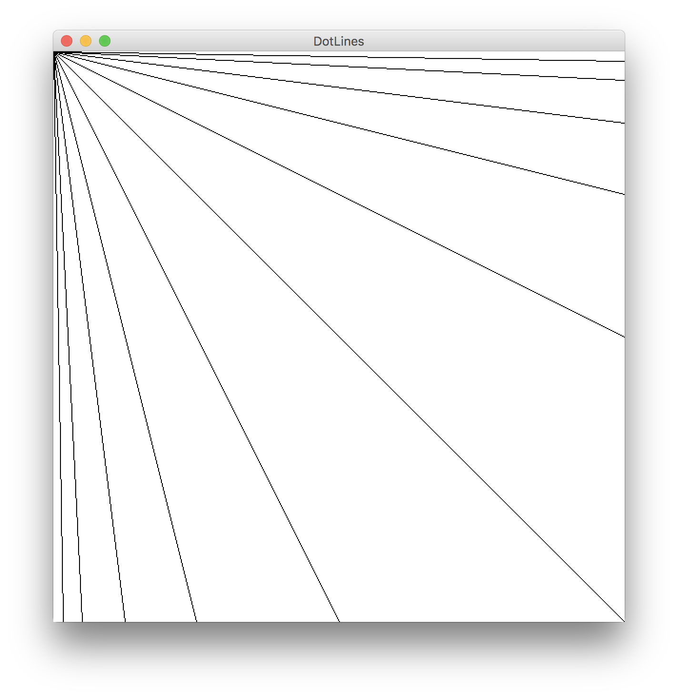

第2章 例題と章末問題 (第 2 回)
| 氏名 | 越智 秀次
|
|---|
| クラス | 理 科 一 類 11 組
|
|---|
| 学生証番号 | J4-170235
|
|---|
□課題2.1 - 2.2節 例 1: 直線群の描画ーLines.java
○プログラムリスト
略
○実行コマンド
ochihidejinoMacBook-Pro:Chap02 ochihideji$ java Lines
○実行結果
○考察
教科書にある通りの描画ができた。
□課題2.2 - 2.2節 例 2: ピクセルによる直線群の描画ーDotLines.java
○プログラムリスト
略
○実行コマンド
ochihidejinoMacBook-Pro:Chap02 ochihideji$ java DotLines
○実行結果

○考察
paintメソッドがどの様な仕組みで動いているのか理解するのに苦労した。
□課題2.3 - 2.2節 例 3: 円(曲線)の描画ーCircle.java
○プログラムリスト
略
○実行コマンド
ochihidejinoMacBook-Pro:Chap02 ochihideji$ java Circle 128
○実行結果
○考察
正128角形を指定して実行すると、ほとんど多角形のようにはみえず、完全な曲線のように見える。試みに正四角形を指定して実行すると、当然ではあるが曲線とは程遠い正四角形が描かれる。ディジタル画像の曲線は細かな線分の集合に過ぎないということを実感することができた。
□課題2.4 - 2.2節 例 4: 直線によるカージオイドの描画ーCardioidLine.java
○プログラムリスト
略
○実行コマンド
ochihidejinoMacBook-Pro:Chap02 ochihideji$ java CardioidLine 128
○実行結果
○考察
多少プログラミングの意味が理解できるようになってきた。18行目の int j = (2*i)%points.length; の部分のiにかかる係数を変化させることで様々な図形を描くことができる。例えば、係数が3の時はネフロイドとなり、係数が4の時は下の図の三つ葉の様な図形ができる。(名称を調べようとしたが、わからなかった。)
□課題2.5 - 2.2節 例 5: 円によるカージオイドの描画ーCardioidOval.java
○プログラムリスト
略
○実行コマンド
ochihidejinoMacBook-Pro:Chap02 ochihideji$ java CardioidOval 64
○実行結果
○考察
8行目8行目の += という演算子は初見だった。インターネットで調べると a += b は a = a + b と同じ意味であるとわかった。
□課題2.6 - 第2章 章末問題: ダイヤモンドパターンの描画
○プログラムリスト
import java.awt.*;
public class DiamondPattern extends Circle {
public static void main(String[] args) {
if (args.length == 0)
System.err.println("Usage: java DiamondPattern #");
else
new DiamondPattern("DiamondPattern", Integer.parseInt(args[0]));
}
protected DiamondPattern(String name, int numberOfPoints) {
super(name, numberOfPoints);
}
public void paint(Graphics g) {
super.paint(g);
for (int i = 0; i < points.length; i++) {
for (int k = 0; k < points.length; k++) {
int j = (k*i) % points.length;
g.drawLine(points[i][0],points[i][1],points[j][0],points[j][1]);
}
}
}
}
○実行コマンド
ochihidejinoMacBook-Pro:Chap02 ochihideji$ java DiamondPattern 25
○実行結果
○考察
paintメソッドはもう少し簡潔に書けるだろうと思って色々試してみたが、結局良い方法は思いつかなかった。
□課題2.7 - 第2章 章末問題: ネフロイドの描画
○プログラムリスト
import java.awt.*;
public class Nephroid extends Circle {
public static void main(String[] args) {
if (args.length == 0)
System.err.println("Usage: java Nephroid #");
else
new Nephroid("Nephroid", Integer.parseInt(args[0]));
}
protected Nephroid(String name, int numberOfPoints) {
super(name, numberOfPoints);
}
public void paint(Graphics g) {
super.paint(g);
for (int i = 0; i < points.length; i++) {
int j = (3*i)%points.length;
g.drawLine(points[i][0],points[i][1],points[j][0],points[j][1]);
}
}
}
○実行コマンド
ochihidejinoMacBook-Pro:Chap02 ochihideji$ java Nephroid 128
○実行結果
○考察
課題2.4で言及した通り、ネフロイドは例4の18行目を少し変えるだけで容易に描くことができる。
□課題2.8 - 第2章 自習課題: アステロイドの描画
○プログラムリスト
import java.awt.*;
import java.awt.event.*;
public class Asteroid extends Canvas {
public static void main(String[] args) {
if (args.length == 0)
System.err.println("Usage: java Asteroid #");
else
new Asteroid("Asteroid", Integer.parseInt(args[0]));
}
private static final int width = 600;
private static final int height = 600;
protected static int centerX = 300;
protected static int centerY = 299;
protected static int radius = 250;
protected static int oval;
protected Asteroid(String name, int numberOfOval) {
super();
setSize(width, height);
setBackground(Color.white);
setForeground(Color.black);
oval = numberOfOval;
Frame f = new Frame(name);
f.add(this);
f.pack();
f.addWindowListener(new WindowAdapter() {
public void windowClosing(WindowEvent e) {
System.exit(0);
}
});
f.setVisible(true);
}
public void paint(Graphics g) {
for (int i = 0; i < radius+1; i=i + oval) {
g.drawOval(centerX-radius+i, centerY-i, 2*(radius-i), 2*i);
}
}
}
○実行コマンド
ochihidejinoMacBook-Pro:Chap02 ochihideji$ java Asteroid 5
○実行結果
○考察
自習用課題として、drawOvalメソッドを応用してアステロイドを描画するプログラムを作成した。楕円の長半径と短半径を一定の値（java Asteroid #で指定する）ずつ変化させ、それら楕円族の包絡としてアステロイドを得る。（理論自体はWikipediaを参照した。）初めはCircle.javaを拡張してプログラムを書こうとしたが、途中で何の意味もないことに気づいて結局Circle.javaを一部書き換えて作成した。
□課題や授業に関して
○レポート作成に要した時間
4時間程度
○特に苦労した点
章末課題はさほど難しくなかったが、自習課題が難しかった。私はJavaを扱った経験がないので、教科書を読んでもわからないことはインターネットで調べて補充した。特に変数の設定の仕方についてよくわからない点が多いので様々なプログラミングを書いて理解していきたい。
○授業についての感想や希望
Circle.javaで使われている配列の考え方が、授業で解説を聞いてもよくわかりませんでした。30行目の points[i] = new int[2]; という部分が何を表しているのかよくわかりません。